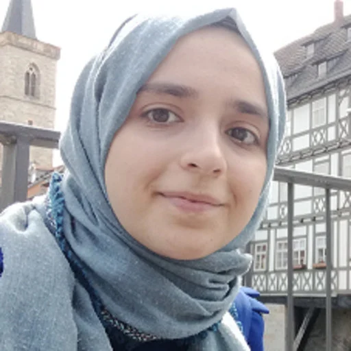

Faculty Members
Şaziye Betül Özateş

saziye.ozates@bogazici.edu.tr
Education:
Ph.D. in Computer Engineering, Boğaziçi University, 2022
M.S. in Computer Engineering, Boğaziçi University, 2014
B.Sc. in Computer Engineering, Boğaziçi University, 2012
Google Scholar Profile
Personal Website
Research Areas:
Natural Language Processing, Computational Linguistics, Syntactic Analysis, Deep Learning, Machine Learning Applications, Natural Language Understanding
Ongoing Projects
- Deep Learning-based Exploration of Linguistic Structures and Semantic Entities in Historical Turkish Texts (BAP, 2024–)
- Continual Pre-training of Large Language Models for Historical Language Understanding (2024–)
- Development of a Deep Learning-Based Data Expansion Tool for Predicting the Efficacy of Antibacterial Nanoparticles Used in Nanomedicine (TÜBİTAK BİLGEM, 2024–) - with E. S. Turalı-Emre
- Automatic Processing and Analysis of Kazasker Ruznamçe Records with Digital Methods (TÜBİTAK 3005, 2024–) - with E. F. B. Taşdemir
Completed Projects
- Building Natural Language Processing Resources for Ottoman Turkish (2023–2025)
- Şaziye Betül Özateş, Tarık Emre Tıraş, Ece Elif Adak, Berat Doğan, Fatih Burak Karagöz, Efe Eren Genç, and Esma F. Bilgin Taşdemir. 2025. Building Foundations for Natural Language Processing of Historical Turkish: Resources and Models. arXiv preprint arXiv:2501.04828.
- Şaziye Betül Özateş, Tarık Emre Tıraş, Efe Eren Genç, and Esma F. Bilgin Taşdemir. 2024. Dependency Annotation of Ottoman Turkish with Multilingual BERT. In Proceedings of The 18th Linguistic Annotation Workshop (LAW-XVIII), pages 188–196, St. Julians, Malta. Association for Computational Linguistics.
- Fatih Burak Karagöz, Berat Doğan, and Şaziye Betül Özateş. 2024. Towards a Clean Text Corpus for Ottoman Turkish. In Proceedings of the First Workshop on Natural Language Processing for Turkic Languages (SIGTURK 2024), accepted. Association for Computational Linguistics.
Publications
- U. Türk, F. Atmaca, Ş. B. Özateş, G. Berk, S. T. Bedir, A. Köksal, B. Ö. Başaran, ... (2022). Resources for Turkish dependency parsing: Introducing the BOUN treebank and the BoAT annotation tool. Language Resources and Evaluation, 56(1), 259–307.
- Ş. B. Özateş, A. Özgür, D. Radev (2016). Sentence similarity based on dependency tree kernels for multi-document summarization. Proc. of the 10th Int. Conf. on Language Resources and Evaluation.
- U. Türk, F. Atmaca, Ş. B. Özateş, A. Köksal, B. Ö. Başaran, T. Güngör, A. Özgür (2019). Turkish treebanking: Unifying and constructing efforts. 13th Linguistic Annotation Workshop, 166–177.
- Ş. B. Özateş, A. Özgür, T. Güngör, B. Öztürk (2018). A morphology-based representation model for LSTM-based dependency parsing of agglutinative languages. CoNLL 2018 Shared Task.
- U. Türk, F. Atmaca, Ş. B. Özateş, B. Ö. Başaran, T. Güngör, A. Özgür (2019). Improving the annotations in the Turkish Universal Dependency Treebank. Third Workshop on Universal Dependencies (UDW, SyntaxFest).
- B. Marşan, S. F. Akkurt, M. Şen, M. Gürbüz, O. Güngör, Ş. B. Özateş, ... (2022). Enhancements to the BOUN treebank reflecting the agglutinative nature of Turkish. arXiv preprint arXiv:2207.11782.
- Ş. B. Özateş, A. Özgür, T. Güngör, B. Ö. Başaran (2022). A hybrid deep dependency parsing approach enhanced with rules and morphology: A case study for Turkish. IEEE Access, 10, 93867–93886.
- Ş. B. Özateş, Ö. Çetinoğlu (2021). A language-aware approach to code-switched morphological tagging. 5th Workshop on Computational Approaches to Linguistic Code-Switching.
- U. Türk, K. Bayar, A. D. Özercan, G. Y. Öztürk, Ş. B. Özateş (2020). First steps towards universal dependencies for Laz. 4th Workshop on Universal Dependencies (UDW 2020), 189–194.
- Ş. B. Özateş, A. Özgür, T. Güngör, Ö. Çetinoğlu (2022). Improving code-switching dependency parsing with semi-supervised auxiliary tasks. Findings of ACL: NAACL 2022, 1159–1171.
- Ş. B. Özateş, T. E. Tıraş, E. E. Genç, E. F. B. Taşdemir (2024). Dependency Annotation of Ottoman Turkish with Multilingual BERT. 18th Linguistic Annotation Workshop (LAW-XVIII), 188–196.
- Ş. B. Özateş, T. E. Tıraş, E. E. Adak, B. Doğan, F. B. Karagöz, E. E. Genç, ... (2025). Building foundations for natural language processing of historical Turkish: Resources and models. arXiv preprint arXiv:2501.04828.
- F. Karagöz, B. Doğan, Ş. B. Özateş (2024). Towards a clean text corpus for Ottoman Turkish. 1st Workshop on NLP for Turkic Languages (SIGTURK 2024).
- Ş. B. Özateş (2022). Deep learning-based Dependency Parsing for Turkish. PhD Thesis, Boğaziçi University.
- E. E. Adak, Ş. B. Özateş (2025). BOUN at #SMM4H-HeaRD 2025: Enhancing dementia family caregiver detection on Twitter/X with a lightweight language model. #SMM4H-HeaRD 2025.
- D. Z. Gürer, Ü. Atlamaz, Ş. B. Özateş (2025). Text extraction and script completion in images of Arabic script-based calligraphy: A thesis proposal. 2025 Conference of the Nations of the Americas Chapter of ACL.
- E. F. B. Taşdemir, Ş. B. Özateş (2025). NakbaTR: A Turkish NER dataset for Nakba narratives. 1st International Workshop on Nakba Narratives as Data.
- U. Türk, F. Atmaca, Ş. B. Özateş, G. Berk, S. T. Bedir, A. Köksal, B. Ö. Başaran, ... (2022). BOUN Treebank. Boğaziçi University.
- B. Marşan, F. Akkurt, S. Üsküdarlı, T. Güngör, B. Öztürk, A. Özgür, O. Güngör, ... (2022). BOUN Treebank v2.11. Boğaziçi University.
- U. Türk, F. Atmaca, Ş. B. Özateş, G. Berk, S. T. Bedir, A. Köksal, B. Ö. Başaran, ... (2021). BOUN Treebank v2.8. Boğaziçi University.
- Ş. B. Özateş, T. Güngör, A. Özgür, B. Ö. Başaran (2020). Dependency Parser. Boğaziçi University.
- U. Türk, F. Atmaca, Ş. B. Özateş, G. Berk, S. T. Bedir, A. Köksal, B. Ö. Başaran, ... The more the merrier. (No formal publication details provided.)